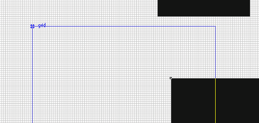

Проблема с позиционированием по сетке
stoper / 15.10.2013, 15:30
Форум:
Версия программы:
11.xxx
Уважаемое сообщество!
Начиная с 10 версии я испытываю трудности с позиционированием объектов по сетке.
При включенной привязке к сетке не всегда происходит чёткое позиционирование по узлам.
Такая проблема присутствует в различных версиях с 10 по Х5, четко позиционирование работало только в версии 9.
В чём может быть причина?
А можно подробнее, т.е. как я например могу повторить проблему?
хорошо. Цитирую по пунктам меню русской версии X5, скачанной с официального сайта
Вид
Настройка сетки и линеек
Сетка
Настраиваемая сетка
По горизонтали 1,0 линии сетки на миллиметр
По вертикали 1,0 линии сетки на миллиметр
v Привязывать к сетке
Т.е. я хочу, чтобы все перемещения и построения осуществлялись с шагом 1 мм, грубо говоря по четким клеточкам
Для наглядности включено отображение привязки (символ #)
Однако, позиционирование не всегда осуществляется с шагом 1 мм, т.е. фактически включенная привязка не работает, точнее срабатывает редко.
Мне приходится масштабировать до максимального увеличения, чтобы проконтролировать привязку.
Я перепробовал множество версий, начиная с 10 из разных источников - результат один и тот же, привязка работает не стабильно. Вместо шага 1 мм (или другого установленного) совершенно произвольное "не жесткое" перемещение. Это касается как перемещения фигур, так и их построения.
В версии 9 всё было чётко, я вынужден её держать для точного построения чертежей
Попробовал, создал кучу объектов, все чётко по сетке. Перемещение тоже работает чётко.
Всё это при условии что остальные прилипания выключены и создание/перемещение происходит по отображению вот такого символа:

Версия Х6.4. Важно также отметить что при перемещении к сетке прилипает именно курсор, а не объект, т.е. если взяться, например, за точку расположенную в 1,5 мм от угла, то и перемещение уже не попадёт в сетку.
возможно, дело в этом. Надо на самом деле ловить символ прилипания # , но это превращается уже в игру "поймай меня", а не в продуктивное черчение.
Да, символ # появляется в узлах сетки, что не мешает мне завершить перемещение и построение между узлами при включенной привязке. Зачем эти лишние движения? Мне нужна абсолютная чёткая привязка к узлам сетки.
В "девятке" такого не было: как бы не взялся за объект - к сетке прилипал чётко.
Немного поправлю себя, при захвате объекта за произвольное ("неровное") место, символ прилипания отображается попеременно, в месте захвата и в левом верхнем углу, если это нужно.
Работайте в 9 до скончания веков, или привыкайте работать по новому. Больше ничего посоветовать не могу.
да я бы с превеликим удовольствием работал бы в "девятке" и Win XP. К сожалению, современное железо их не тянет.
Зачем мне привыкать к работе со множеством манипуляций? Я хочу быстро, просто, чётко.
Кстати, современный продвинутый софт слабо позволяет работать "в слепую". Мало кто уже знает, что такое печать на клавиатуре "в слепую". Так вот до версии 10 была возможность работать и чертить в Кореле " в слепую".
Я сижу на нём с версии 2.0, т.е. с самого его создания. Корел претерпел множество изменений и дополнений. Но, к сожалению, испытываю больше разочарований от очередной версии, всё больше теряется самобытность и интуитивный интерфейс в погоне быть похожим на иллюстратор и пр.
Да да, раньше было всё лучше, трава зеленее и солнце ярче светило, бла бла бла... :)
уважаемый, сколько Вам лет, сколько вы в Кореле и с какой версии?